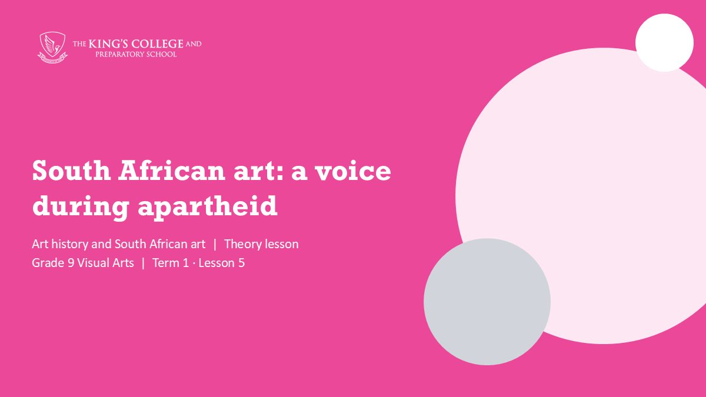

Term 1 · Lesson 5 · Theory lesson
South African art: a voice during apartheid
Start here
Today I will
- Explain how South African artists used art as a voice during apartheid
- Know Sekoto, Polly Street, Rorke's Drift, Muafangejo and Kentridge
- Understand the Term 2 research video project
If you were not allowed to vote, speak out freely or live where you wanted, how could a picture still say something?
Words to know
- Resistance art
- Art made to oppose an unjust system, such as apartheid, by showing the truth and encouraging hope and change.
- Social realism
- Realistic art showing the hard living and working conditions of ordinary people, to make viewers think about injustice.
- Township art
- A name given to work by black artists from the 1940s onward showing township life; many artists disliked the label.
- Protest art
- Art that speaks out against injustice, often with strong, simple images and text.
- Apartheid
- The system of laws (1948–1994) that separated South Africans by race and took away rights from black people.
Slides

Notes
Gerard Sekoto and township scenes; social realism and resistance art as a voice during apartheid; community art centres (Polly Street, Rorke's Drift); John Muafangejo and William Kentridge introduced. Hand out the Term 2 research video project.
Art as a voice: key names
- Gerard Sekoto (1913–1993): Painted daily life in Sophiatown, District Six and Eastwood; in 1947 he left for Paris and lived there in exile until his death.
- Social realism: Honest pictures of workers and families, showing hardship and dignity.
- Polly Street (Johannesburg, 1950s): A community art centre where many black artists trained when art schools were closed to them.
- Rorke's Drift (KwaZulu-Natal, from 1962): A church-run art and craft centre known for printmaking and weaving.
- John Muafangejo: Namibian artist trained at Rorke's Drift; bold black-and-white linocuts that tell stories.
- William Kentridge (born 1955): Johannesburg artist whose charcoal animations deal with apartheid and memory.
Two artworks, two ways of speaking
| Sekoto, Song of the Pick | 1980s resistance posters |
|---|---|
| Medium: oil paint on canvas. | Medium: screen-printed quickly by community groups. |
| Message: workers' strength and dignity, watched by an overseer. | Message: an open call for freedom and change. |
| How: repeated figures create rhythm and movement. | How: bold text, strong contrast and simple images. |
| Audience: gallery viewers. | Audience: people in the street, at meetings and on T-shirts. |
When people could not speak freely, art kept telling the truth.
'Speak up for those who cannot speak for themselves.' How did these artists do that, and how can we use our gifts to stand up for others?
Practical
You need: Timeline, project brief
South Africa on the timeline and the project brief
- In the space you left on the timeline, mark 1948 and 1994 (apartheid and the first democratic election).
- Add Sekoto, Polly Street, Rorke's Drift, resistance art and Kentridge with dates and one keyword each.
- Read the research video project brief with the teacher.
- Choose (or list three possible) South African artists who used art as a voice in society.
- Write the due date in your diary: Term 2, Week 2 (Friday).
Research video project issued: a South African artist as a voice in society (due Term 2, Week 2).
Test yourself
- What is social realism?
- Why were community art centres such as Polly Street and Rorke's Drift important?
- Name two South African artists who used art as a voice during apartheid.
Show answers
1. Realistic art showing the hard lives of ordinary people so that viewers think about injustice. 2. Black artists could train there when most art schools were closed to them. 3. Any two: Gerard Sekoto, John Muafangejo, William Kentridge (or another artist discussed).